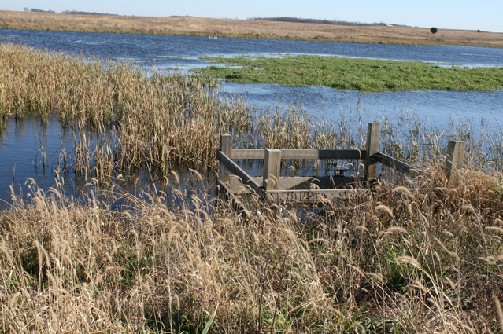
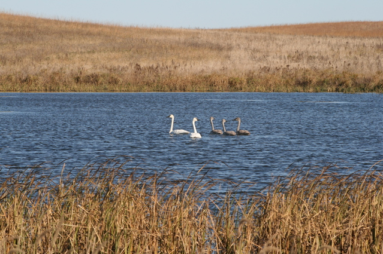
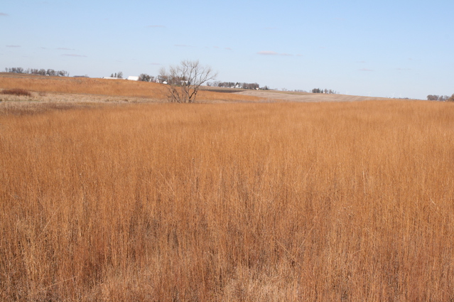
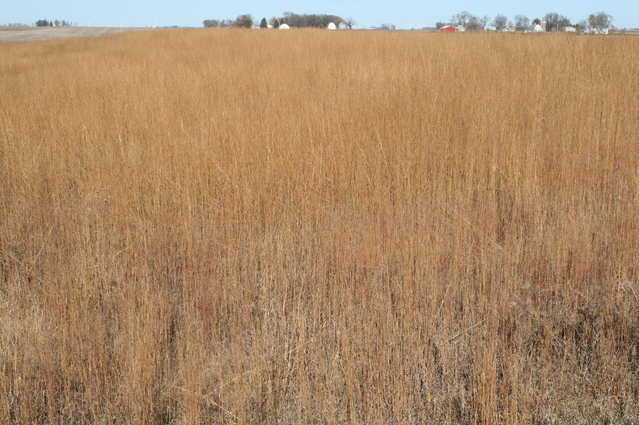

Taisce (pronounced like "tashka") is Celtic for trust, treasure, or collection of valuable things, and a definition of taisce can be found here. Newry Township was settled by numerous Irish families in the 1870s, and two farms first settled by Irish immigrants compose the Newry Taisce. The land is now permanently out of agricultural production, and the Butler Family manages conservation, hunting, and recreation.
Ellen Cochlin and Mathew Daly were 1878 owners of the parcels now called Newry Taisce. Mathew Daly donated a hill with soils described in the Freeborn County soil survey as good for for digging and bad for farming that became St. Mary's Cemetery. The last remaining Daly heir, Mary Catherine Burns, left her estate to St. Mary's Hospital and the Diocese of Winona in 1983. The Butlers then purchased the Burns farmland in 1987.
   {kind=link}
{kind=link}
{kind=link}
{kind=link}
Contact
Please call or email to arrange a time for hunting.
- Phone: +1 (507) 383-8094
- Email: info@newrytaisce.com